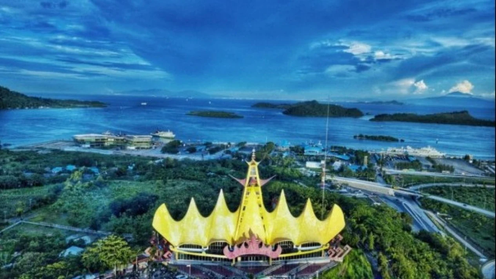
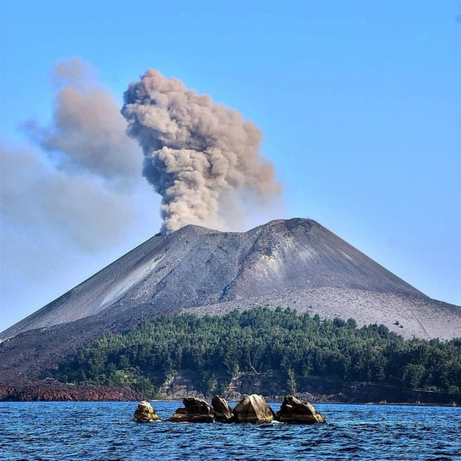
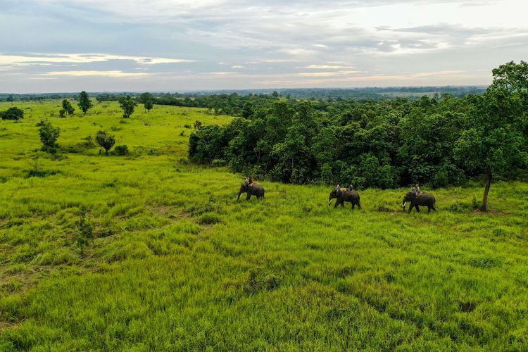
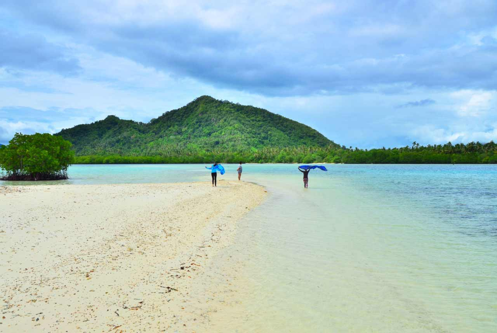

Sejarah
Sejak tahun 1945, setelah Indonesia meraih kemerdekaan, Lampung telah mengalami perjalanan yang menarik dan dinamis. Awalnya, provinsi ini menghadapi berbagai tantangan dalam membangun infrastruktur dan pemerintahan. Pada tahun 1964, Lampung resmi menjadi provinsi, dengan Bandar Lampung ditetapkan sebagai ibu kotanya. Sejak saat itu, provinsi ini mulai berkembang sebagai pusat pertanian dan perdagangan, memanfaatkan kesuburan tanahnya dan lokasi strategisnya di jalur perdagangan antara Sumatra dan Jawa.
Ekonomi Lampung banyak bergantung pada sektor pertanian. Provinsi ini dikenal sebagai penghasil komoditas utama seperti kopi, tebu, dan padi. Seiring berjalannya waktu, Lampung juga mengembangkan sektor perikanan dan perkebunan, terutama kelapa sawit, untuk meningkatkan perekonomiannya. Dengan berbagai inisiatif untuk menarik investasi dan memperkuat industri pengolahan, Lampung berupaya menjadi lebih mandiri secara ekonomi.
Di samping itu, Lampung memiliki potensi pariwisata yang kaya, dengan banyak destinasi alam yang memikat. Taman Nasional Way Kambas, yang terkenal dengan konservasi gajah, dan Gunung Krakatau, yang memiliki sejarah letusan vulkanik yang dramatis, menjadi daya tarik bagi wisatawan. Festival budaya dan seni lokal, seperti Festival Krakatau, juga diadakan untuk merayakan kekayaan budaya Lampung dan menarik perhatian lebih banyak pengunjung.
Budaya Lampung sangat beragam dan mencerminkan warisan yang kaya. Suku Lampung, sebagai penduduk asli, memiliki tradisi, bahasa, dan seni yang unik. Upacara adat dan festival, seperti "Nyangku" yang melambangkan rasa syukur kepada Tuhan atas hasil pertanian, menunjukkan kedalaman budaya masyarakatnya. Setiap elemen budaya ini menambah warna dan keunikan Lampung, menciptakan ikatan yang kuat antara masyarakat dan tanah air mereka.
Meskipun Lampung telah mencapai banyak kemajuan, provinsi ini juga menghadapi tantangan. Bencana alam, seperti banjir dan gempa bumi, sering kali mengancam kehidupan masyarakat. Selain itu, ada ketimpangan pembangunan antara daerah perkotaan dan pedesaan yang perlu diatasi. Pemerintah provinsi bekerja keras untuk menciptakan program pembangunan yang berkelanjutan, berusaha membawa semua lapisan masyarakat menuju kemajuan yang lebih merata.
Secara keseluruhan, perjalanan Lampung sejak tahun 1945 adalah kisah tentang pertumbuhan, harapan, dan keanekaragaman. Dengan sumber daya alam yang melimpah dan warisan budaya yang kaya, Lampung berpotensi menjadi salah satu provinsi yang lebih maju di Indonesia. Masyarakatnya yang beragam dan bersemangat terus berusaha untuk mewujudkan masa depan yang lebih baik, menjadikan Lampung sebuah tempat yang menarik dan penuh dengan peluang.
Geografis
Lampung terletak di bagian selatan pulau Sumatra, Indonesia, dan berbatasan langsung dengan Selat Sunda di sebelah baratnya, yang memisahkan pulau Sumatra dari pulau Jawa. Provinsi ini dikelilingi oleh beberapa provinsi lainnya, yaitu Bengkulu di sebelah barat, Sumatera Selatan di sebelah utara, dan Banten di sebelah selatan.
Secara geografis, Lampung memiliki topografi yang bervariasi, dengan pegunungan, bukit, dan dataran rendah. Sebagian besar wilayahnya terdiri dari daerah perbukitan dan pegunungan, dengan puncak tertinggi berada di Gunung Pesagi, yang menjulang setinggi sekitar 2.000 meter di atas permukaan laut. Selain itu, terdapat juga banyak sungai, seperti Sungai Way Semangka dan Sungai Way Kanan, yang memberikan kesuburan bagi tanah pertanian di sekitarnya.
Iklim di Lampung termasuk iklim tropis, dengan dua musim yang jelas: musim hujan dan musim kemarau. Musim hujan biasanya terjadi antara bulan November hingga April, sementara musim kemarau berlangsung dari bulan Mei hingga Oktober. Keberadaan iklim yang mendukung ini membuat Lampung menjadi wilayah yang subur dan cocok untuk pertanian, menghasilkan berbagai komoditas seperti padi, kopi, dan buah-buahan.
Luas wilayah Lampung mencapai sekitar 35.000 kilometer persegi, menjadikannya sebagai salah satu provinsi terbesar di Sumatra. Dengan kekayaan alam dan keindahan lanskapnya, Lampung menawarkan potensi besar untuk pengembangan pariwisata, agrikultur, dan sumber daya alam lainnya. Keberadaan taman nasional, seperti Taman Nasional Way Kambas, juga menambah nilai ekologis provinsi ini, menjadi habitat bagi berbagai spesies langka, termasuk gajah sumatera.
Secara keseluruhan, geografis Lampung yang kaya dan beragam memberikan kontribusi signifikan terhadap kehidupan masyarakatnya, baik dari segi ekonomi, budaya, maupun lingkungan. Wilayah ini tidak hanya merupakan jalur perdagangan penting, tetapi juga menyimpan keindahan alam yang menunggu untuk dijelajahi.
Wisata
Lampung memiliki beragam destinasi wisata yang menarik, mulai dari keindahan alam hingga warisan budaya. Berikut adalah beberapa tempat wisata terkenal di Lampung beserta deskripsinya:
Taman Nasional Way Kambas
Taman Nasional Way Kambas adalah taman nasional pertama di Indonesia, dikenal sebagai habitat bagi gajah sumatera. Tempat ini menawarkan berbagai kegiatan seperti trekking, birdwatching, dan menyaksikan gajah dalam habitat alami mereka. Taman ini juga memiliki pusat konservasi gajah yang mengedukasi pengunjung tentang pelestarian satwa langka.
Pulau Pahawang
Pulau Pahawang terkenal dengan keindahan bawah lautnya yang menakjubkan, menjadikannya destinasi snorkeling dan diving yang populer. Pulau ini dikelilingi terumbu karang yang kaya akan keanekaragaman hayati. Di sini, pengunjung dapat menjelajahi keindahan alam sambil menikmati suasana tropis yang damai.